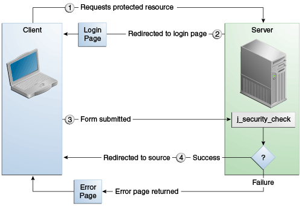

<!-- SECURITY CONSTRAINT #1 -->
<security-constraint>
<web-resource-collection>
<web-resource-name>wholesale</web-resource-name>
<url-pattern>/acme/wholesale/*</url-pattern>
</web-resource-collection>
<auth-constraint>
<role-name>PARTNER</role-name>
</auth-constraint>
<user-data-constraint>
<transport-guarantee>CONFIDENTIAL</transport-guarantee>
</user-data-constraint>
</security-constraint>
<!-- SECURITY CONSTRAINT #2 -->
<security-constraint>
<web-resource-collection>
<web-resource-name>retail</web-resource-name>
<url-pattern>/acme/retail/*</url-pattern>
</web-resource-collection>
<auth-constraint>
<role-name>CLIENT</role-name>
</auth-constraint>
<user-data-constraint>
<transport-guarantee>CONFIDENTIAL</transport-guarantee>
</user-data-constraint>
</security-constraint>
Protección de Aplicaciones Web
Las aplicaciones web son creadas por desarrolladores de aplicaciones que dan, venden o transfieren la aplicación a un implementador de aplicaciones para su instalación en un entorno de tiempo de ejecución.
Aquí se tratan los siguientes temas:
Descripción General de la Protección de Aplicaciones Web
Los desarrolladores de aplicaciones comunican cómo configurar la seguridad para la aplicación implementada mediante anotaciones o descriptores de implementación. Esta información se pasa al implementador, que la usa para definir permisos de métodos para roles de seguridad, configurar la autenticación de usuarios y configurar el mecanismo de transporte apropiado. Si el desarrollador de la aplicación no define los requisitos de seguridad, el implementador deberá determinar los requisitos de seguridad de forma independiente.
Algunos elementos necesarios para la seguridad en una aplicación web no se pueden especificar como anotaciones para todos los tipos de aplicaciones web. Este capítulo explica cómo proteger las aplicaciones web utilizando anotaciones siempre que sea posible. Explica cómo usar descriptores de implementación donde no se pueden usar anotaciones.
Especificación de Restricciones de Seguridad
Se utiliza una restricción de seguridad para definir los privilegios de acceso a una colección de recursos utilizando su asignación de URL.
Si su aplicación web utiliza un servlet, puede expresar la información de restricción de
seguridad mediante anotaciones. Específicamente, usa las anotaciones
@HttpConstraint y, opcionalmente, las anotaciones
@HttpMethodConstraint dentro de la anotación @ServletSecurity para
especificar una restricción de seguridad.
Sin embargo, si su aplicación web no utiliza un servlet, debe especificar un elemento
security-constraint en el archivo descriptor de implementación. El mecanismo de
autenticación no se puede expresar mediante anotaciones, por lo que si utiliza cualquier
método de autenticación que no sea BASIC (el predeterminado), requiere un
descriptor de implementación.
Los siguientes subelementos pueden formar parte de una security-constraint.
-
Recopilación de recursos web (
web-resource-collection): una lista de patrones de URL (la parte de una URL después del nombre de host y el puerto que desea restringir) y operaciones HTTP (los métodos dentro de los archivos que coincida con el patrón de URL que desea restringir) que describen un conjunto de recursos que deben protegerse. Las colecciones de recursos web se analizan en Especificación de una Colección de Recursos Web. -
Restricción de autorización (
auth-constraint): especifica si se utilizará la autenticación y nombra los roles autorizados para realizar las solicitudes restringidas. Para obtener más información sobre las restricciones de autorización, consulte Especificación de una Restricción de Autorización. -
Restricción de datos de usuario (
restricción de datos de usuario): especifica cómo se protegen los datos cuando se transportan entre un cliente y un servidor. Las restricciones de datos de usuario se analizan en Especificación de una Conexión Segura.
Especificación de una Colección de Recursos Web
Una colección de recursos web consta de los siguientes subelementos.
-
web-resource-namees el nombre que usa para este recurso. Su uso es opcional. -
url-patternse utiliza para enumerar el URI de solicitud que se protegerá. Muchas aplicaciones tienen recursos tanto desprotegidos como protegidos. Para proporcionar acceso sin restricciones a un recurso, no configure una restricción de seguridad para ese URI de solicitud en particular.El URI de solicitud es la parte de una URL después del nombre de host y el puerto. Por ejemplo, supongamos que tiene un sitio de comercio electrónico con un catálogo al que le gustaría que cualquiera pudiera acceder y navegar, y un área de carrito de compras solo para clientes. Puede configurar las rutas para su aplicación web de modo que el patrón
/cart/*esté protegido pero nada más esté protegido. Suponiendo que la aplicación está instalada en la ruta de contexto/myapp, lo siguiente es cierto.-
http://localhost:8080/myapp/index.xhtmlno está protegido. -
http://localhost:8080/myapp/cart/index.xhtmlestá protegido.Se le pedirá a un usuario que inicie sesión la primera vez que acceda a un recurso en el subdirectorio
cart/.
-
-
http-methodohttp-method-omissionse utiliza para especificar qué métodos deben protegerse o qué métodos deben omitirse de la protección. Un método HTTP está protegido por unaweb-resource-collectionen cualquiera de las siguientes circunstancias:-
Si no se nombra ningún método HTTP en la colección (lo que significa que todos están protegidos)
-
Si la colección nombra específicamente el método HTTP en un subelemento
http-method -
Si la colección contiene uno o más elementos
http-method-omission, ninguno de los cuales nombra el método HTTP
-
Especificación de una Restricción de Autorización
Una restricción de autorización (auth-constraint) contiene el elemento
role-name. Puede usar tantos elementos role-name como necesite aquí.
Una restricción de autorización establece un requisito de autenticación y nombra los roles
autorizados para acceder a los patrones de URL y los métodos HTTP declarados por esta
restricción de seguridad. Si no hay restricción de autorización, el contenedor debe aceptar la
solicitud sin requerir la autenticación del usuario. Si hay una restricción de autorización
pero no se especifican roles dentro de ella, el contenedor no permitirá el acceso a las
solicitudes restringidas bajo ninguna circunstancia. Cada nombre de rol especificado aquí debe
corresponder al nombre de rol de uno de los elementos security-role definidos
para esta aplicación web o ser el nombre de rol especialmente reservado *, que
indica todos los roles en la aplicación web. Los nombres de roles distinguen entre mayúsculas
y minúsculas. Los roles definidos para la aplicación deben asignarse a los usuarios y grupos
definidos en el servidor, excepto cuando se utiliza el mapeo predeterminado de principal a
rol.
Para obtener más información sobre los roles de seguridad, consulte la Declaración de Roles de Seguridad. Para obtener información sobre la asignación de roles de seguridad, consulte Asignación de roles a usuarios y grupos.
Para un servlet, las anotaciones @HttpConstraint y
@HttpMethodConstraint aceptan un elemento rolesAllowed que
especifica los roles autorizados.
Especificación de una Conexión Segura
Una restricción de datos de usuario (user-data-constraint en el descriptor de
implementación) contiene el subelemento transport-guarantee. Se puede usar una
restricción de datos de usuario para exigir que se use una conexión de capa de transporte
protegida, como HTTPS, para todos los patrones de URL restringidos y métodos HTTP
especificados en la restricción de seguridad. Las opciones para la garantía de transporte son
CONFIDENTIAL, INTEGRAL o NONE. Si especifica
CONFIDENTIAL o INTEGRAL como restricción de seguridad, generalmente
significa que se requiere el uso de SSL y se aplica a todas las solicitudes que coincidan con
los patrones de URL en la colección de recursos web. , no solo al cuadro de diálogo de inicio
de sesión.
La fuerza de la protección requerida se define por el valor de la garantía de transporte, como sigue.
-
Especifique
CONFIDENTIALcuando la aplicación requiera que los datos se transmitan para evitar que otras entidades observen el contenido de la transmisión. -
Especifique
INTEGRALcuando la aplicación requiera que los datos se envíen entre el cliente y el servidor de tal manera que no se puedan cambiar en tránsito. -
Especifique
NONEpara indicar que el contenedor debe aceptar las solicitudes restringidas en cualquier conexión, incluidas las desprotegidas.
|
Nota:
En la práctica, los servidores Java EE tratan los valores de garantía de transporte
|
La restricción de datos de usuario es útil para usar junto con la autenticación de usuario
básica y basada en formularios. Cuando el método de autenticación de inicio de sesión se
establece en BASIC o FORM, las contraseñas no están protegidas, lo
que significa que las contraseñas enviadas entre un cliente y un servidor en una sesión
desprotegida se pueden ver e interceptar por terceros. El uso de una restricción de datos de
usuario con el mecanismo de autenticación de usuario puede aliviar esta preocupación. La
configuración de un mecanismo de autenticación de usuario se describe en
Especificación de un Mecanismo de Autenticación en el Descriptor de Implementación
.
Para garantizar que los datos se transporten a través de una conexión segura, asegúrese de que la compatibilidad con SSL esté configurada para su servidor. La compatibilidad con SSL ya está configurada para el servidor GlassFish.
|
Nota: Después de cambiar a SSL para una sesión, nunca debe aceptar ninguna solicitud que no sea SSL para el resto de esa sesión. Por ejemplo, es posible que un sitio de compras no use SSL hasta la página de pago y luego cambie a usar SSL para aceptar su número de tarjeta. Después de cambiar a SSL, debe dejar de escuchar solicitudes que no sean SSL para esta sesión. El motivo de esta práctica es que el propio ID de sesión no estaba cifrado en las comunicaciones anteriores. Esto no es tan malo cuando solo está haciendo sus compras, pero después de que la información de la tarjeta de crédito se almacena en la sesión, no desea que nadie use esa información para falsificar la transacción de compra contra su tarjeta de crédito. Esta práctica podría implementarse fácilmente mediante el uso de un filtro. |
Especificación de Restricciones de Seguridad para Recursos
Puede crear restricciones de seguridad para los recursos dentro de su aplicación. Por ejemplo,
podría permitir a los usuarios con el rol de PARTNER acceso total a todos los
recursos en el patrón de URL /acme/wholesale/* y permitir a los usuarios con el
rol de CLIENT acceso completo a todos los recursos en el patrón de URL
/acme/retail/*. Esta es la forma recomendada de proteger los recursos si no desea
proteger algunos métodos HTTP y dejar otros métodos HTTP desprotegidos. Un ejemplo de un
descriptor de implementación que demostraría esta funcionalidad es el siguiente:
Especificación de Mecanismos de Autenticación
Un mecanismo de autenticación de usuario especifica
-
La forma en que un usuario obtiene acceso al contenido web
-
Con la autenticación básica, el ámbito en el que se autenticará al usuario
-
Con autenticación basada en formularios, atributos adicionales
Cuando se especifica un mecanismo de autenticación, el usuario debe autenticarse antes de que se conceda acceso a cualquier recurso que esté restringido por una restricción de seguridad. Puede haber múltiples restricciones de seguridad que se apliquen a múltiples recursos, pero el mismo método de autenticación se aplicará a todos los recursos restringidos en una aplicación.
Antes de poder autenticar a un usuario, debe tener una base de datos de nombres de usuario, contraseñas y funciones configurada en su servidor web o de aplicaciones. Para obtener información sobre cómo configurar la base de datos de usuarios, consulte Administrar Usuarios y Grupos en el Servidor GlassFish .
La plataforma Java EE admite los siguientes mecanismos de autenticación:
-
Autenticación básica
-
Autenticación basada en formularios
-
Autenticación implícita
-
Autenticación del cliente
-
Autenticacion mutua
En esta sección se analiza la autenticación básica, basada en formularios y implícita. El cliente y la autenticación mutua se tratan en el Capítulo 53, "Seguridad Java EE: Temas Avanzados".
La autenticación básica HTTP y la autenticación basada en formularios no son mecanismos de autenticación muy seguros. La autenticación básica envía nombres de usuario y contraseñas a través de Internet como texto codificado en Base64. La autenticación basada en formularios envía estos datos como texto sin formato. En ambos casos, el servidor de destino no está autenticado. Por lo tanto, estas formas de autenticación dejan los datos de los usuarios expuestos y vulnerables. Si alguien puede interceptar la transmisión, la información del nombre de usuario y la contraseña se puede decodificar fácilmente.
Sin embargo, cuando se utiliza un mecanismo de transporte seguro, como SSL, o seguridad a nivel de red, como el protocolo Internet Protocol Seguridad (IPsec) o las estrategias de red privada virtual (VPN), junto con la autenticación básica o basada en formularios, algunas de estas preocupaciones pueden aliviarse. Para especificar un mecanismo de transporte seguro, utilice los elementos descritos en Especificación de una Conexión Segura.
Autenticación Básica de HTTP
Especificar la autenticación básica HTTP requiere que el servidor solicite un nombre de usuario y una contraseña del cliente web y verifique que el nombre de usuario y la contraseña sean válidos comparándolos con una base de datos de usuarios autorizados en el dominio especificado o predeterminado.
La autenticación básica es la predeterminada cuando no especifica un mecanismo de autenticación.
Cuando se utiliza la autenticación básica, se producen las siguientes acciones.
-
Un cliente solicita acceso a un recurso protegido.
-
El servidor web devuelve un cuadro de diálogo que solicita el nombre de usuario y la contraseña.
-
El cliente envía el nombre de usuario y la contraseña al servidor.
-
El servidor autentica al usuario en el dominio especificado y, si tiene éxito, devuelve el recurso solicitado.
La Figura 51-1 muestra lo que sucede cuando especifica la autenticación básica HTTP.
Figure 51-1 Autenticación Básica de HTTP

Autenticación Basada en Formularios
La autenticación basada en formularios permite al desarrollador controlar la apariencia de las pantallas de autenticación de inicio de sesión al personalizar la pantalla de inicio de sesión y las páginas de error que un navegador HTTP presenta al usuario final. Cuando se declara la autenticación basada en formularios, se producen las siguientes acciones.
-
Un cliente solicita acceso a un recurso protegido.
-
Si el cliente no está autenticado, el servidor redirige al cliente a una página de inicio de sesión.
-
El cliente envía el formulario de inicio de sesión al servidor.
-
El servidor intenta autenticar al usuario.
-
Si la autenticación se realiza correctamente, se comprueba la entidad de seguridad del usuario autenticado para asegurarse de que tiene una función autorizada para acceder al recurso. Si el usuario está autorizado, el servidor redirige al cliente al recurso utilizando la ruta URL almacenada.
-
Si la autenticación falla, el cliente es reenviado o redirigido a una página de error.
-
La Figura 51-2 muestra lo que sucede cuando especifica la autenticación basada en formularios.
Figura 51-2 Autenticación Basada en Formularios

La sección El Ejemplo hello1-formauth: Autenticación Basada en Formularios con una Aplicación JavaServer Faces es una aplicación de ejemplo que utiliza autenticación basada en formularios.
Cuando cree un inicio de sesión basado en un formulario, asegúrese de mantener las sesiones usando cookies o información de sesión SSL.
Para que la autenticación proceda correctamente, la acción del formulario de inicio de sesión
siempre debe ser j_security_check. Esta restricción se realiza para que el
formulario de inicio de sesión funcione sin importar para qué recurso sea y para evitar que el
servidor especifique el campo de acción del formulario de salida. El siguiente fragmento de
código muestra cómo se debe codificar el formulario en la página HTML:
<form method="POST" action="j_security_check">
<input type="text" name="j_username">
<input type="password" name="j_password">
</form>
Autenticación de Resumen (Digest)
Al igual que la autenticación básica, la autenticación implícita autentica a un usuario en función de un nombre de usuario y una contraseña. Sin embargo, a diferencia de la autenticación básica, la autenticación implícita no envía contraseñas de usuario a través de la red. En su lugar, el cliente envía un hash criptográfico unidireccional de la contraseña y datos adicionales. Aunque las contraseñas no se envían por cable, la autenticación de resumen requiere que los equivalentes de contraseñas en texto claro estén disponibles para el contenedor de autenticación para que pueda validar los autenticadores recibidos mediante el cálculo del resumen esperado.
Especificación de un Mecanismo de Autenticación en el Descriptor de Implementación
Para especificar un mecanismo de autenticación, utilice el elemento login-config.
Puede contener los siguientes subelementos.
-
El subelemento
auth-methodconfigura el mecanismo de autenticación para la aplicación web. El contenido del elemento debe serNONE,BASIC,DIGEST,FORMoCLIENT-CERT. -
El subelemento
realm-nameindica el nombre de dominio que se utilizará cuando se elija el esquema de autenticación básico para la aplicación web. -
El subelemento
form-login-configespecifica el inicio de sesión y las páginas de error que deben usarse cuando se especifica el inicio de sesión basado en formulario.
|
Nota:
Otra forma de especificar la autenticación basada en formularios es utilizar los
métodos |
Cuando intenta acceder a un recurso web que está restringido por un elemento
security-constraint, el contenedor web activa el mecanismo de autenticación que se
ha configurado para ese recurso. El mecanismo de autenticación especifica cómo se solicitará al
usuario que inicie sesión. Si el elemento login-config está presente y el elemento
auth-method contiene un valor distinto de NONE, el usuario debe estar
autenticado para acceder al recurso. Si no especifica un mecanismo de autenticación, no se
requiere la autenticación del usuario.
El siguiente ejemplo muestra cómo declarar la autenticación basada en formularios en su descriptor de implementación:
<login-config>
<auth-method>FORM</auth-method>
<realm-name>file</realm-name>
<form-login-config>
<form-login-page>/login.xhtml</form-login-page>
<form-error-page>/error.xhtml</form-error-page>
</form-login-config>
</login-config>
Las ubicaciones de las páginas de error e inicio de sesión se especifican en relación con la ubicación del descriptor de implementación. Se muestran ejemplos de páginas de inicio de sesión y error en Crear el Formulario de Inicio de Sesión y la Página de Error .
El siguiente ejemplo muestra cómo declarar la autenticación implícita en su descriptor de implementación:
<login-config>
<auth-method>DIGEST</auth-method>
</login-config>
Declaración de Roles de Seguridad
Puede declarar nombres de roles de seguridad usados en aplicaciones web usando el elemento
security-role del descriptor de implementación. Utilice este elemento para enumerar
todos los roles de seguridad a los que ha hecho referencia en su aplicación.
El siguiente fragmento de un descriptor de implementación declara los roles que se usarán en una
aplicación usando el elemento security-role y especifica cuál de estos roles está
autorizado para acceder a los recursos protegidos usando el elemento
auth-constraint:
<security-constraint>
<web-resource-collection>
<web-resource-name>Protected Area</web-resource-name>
<url-pattern>/security/protected/*</url-pattern>
<http-method>PUT</http-method>
<http-method>DELETE</http-method>
<http-method>GET</http-method>
<http-method>POST</http-method>
</web-resource-collection>
<auth-constraint>
<role-name>manager</role-name>
</auth-constraint>
</security-constraint>
<!-- Security roles used by this web application -->
<security-role>
<role-name>manager</role-name>
</security-role>
<security-role>
<role-name>employee</role-name>
</security-role>
En este ejemplo, el elemento security-role enumera todos los roles de seguridad
utilizados en la aplicación: manager y employee. Esto permite que el
implementador asigne todos los roles definidos en la aplicación a los usuarios y grupos
definidos en el servidor GlassFish.
El elemento auth-constraint especifica el rol, manager, que puede
acceder a los métodos HTTP PUT, DELETE, GET y POST ubicados en el directorio especificado por el
elemento url-pattern (/security/protected/*).
La anotación @ServletSecurity no se puede utilizar en esta situación porque sus
restricciones se aplican a todos los patrones de URL especificados por la anotación
@WebServlet.